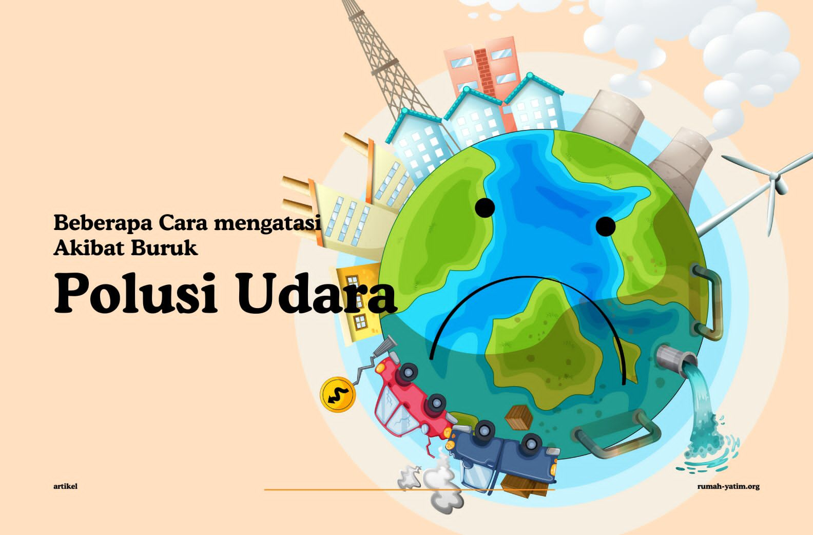

apa yang kita bisa lakukan dalam menanggulangi polusi yag terjadi?
pasrah? portes ke pemerintah? atau rebahan di rumah sampai polusi menghilang?
bukan begitu cara menanggulangi polusi yang terjadi. gini caranya
1. Tanaman Dalam Ruangan : Tanaman dalam ruangan tertentu seperti spider plants, peace lilies, and snake plants dapat membantu meningkatkan kualitas udara dalam ruangan dengan menyerap polutan.
2. Pembersih Udara (Air Purifiers) : Pembersih udara berkualitas tinggi dengan filter HEPA dapat mengurangi polutan udara dalam ruangan.
3. Ventilasi yang Tepat : Memastikan ventilasi yang baik di rumah dapat membantu mengurangi polusi udara dalam ruangan dengan membiarkan polutan menyebar.
4. Tetap Terhidrasi : Minum banyak air dapat membantu membuang racun dari sistem tubuh. dan
5. Diet Sehat : Mengkonsumsi makanan kaya antioksidan dapat membantu tubuh memerangi stres oksidatif yang disebabkan oleh polutan.
Mengatasi polusi udara di kota-kota besar membutuhkan pendekatan multi-aspek yang melibatkan kebijakan pemerintah, kemajuan teknologi, dan upaya individu. Upaya individu yang dapat kita lakukan secara langsung untuk mengurangi polusi udara berupa :
1. Menggunakan masker medis bila berada di luar ruangan.
2. Mengurangi aktifitas di luar ruangan terutama saat lalu lintas sibuk.
3. Meningkatkan daya tahan tubuh.
4. Bila ke luar ruangan, hindari jalanan ramai dan macet.
5. Hindari membawa bayi dan anak anak di luar ruangan.